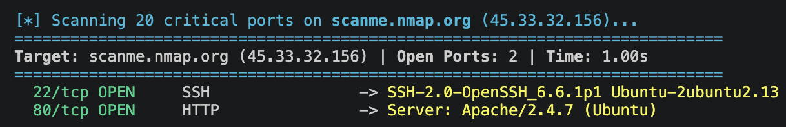

Headers, sensitive paths, and subdomains all tell you about a host. None of them tell you what's actually listening on it. Once a target's domains and subdomains are mapped, the next question is the one that turns a list of hostnames into a list of real attack surface: which ports are open, and what's actually answering on them? A staging.example.com that resolves is interesting. A staging.example.com with Redis listening on 6379 with no authentication is a finding.
That's what Multi-Threaded Port & Banner Scanner (port_scanner.py) closes out the suite with. It's a CLI tool that connects to a curated set of high-value ports in parallel, and for every port that answers, grabs whatever the service running on it is willing to say about itself — a Redis version string, an SSH banner, an HTTP Server header from a dev server nobody remembered to take down. It's built with zero third-party dependencies, entirely on Python's standard-library socket and concurrent.futures modules, which means it runs anywhere a Python interpreter does — no pip install, no compiled network stack, just fast and portable TCP recon. Below is a breakdown of how it's built, followed by the terminal output and the hardening steps that close what it finds.
Why Port Scanning Is the Last Mile of Recon
A domain or subdomain is just a name until something is confirmed to be listening behind it. Port scanning is what converts a hostname into an actual service inventory — and in practice, the services worth finding aren't the ones the target intended to expose. They're the database engine that was supposed to stay behind an app server, the Redis instance spun up for local testing and never firewalled off, the dev server on 3000 or 8080 left running on a box that's technically public. None of those show up in a header audit or a sensitive-file check, because none of them speak HTTP at all.
A full 1–65535 port sweep would find all of this eventually, but it buys that completeness with minutes of noisy traffic per host — most of which lands on ports nothing has ever run on. port_scanner.py takes the opposite bet: scan only the 20 ports that actually correlate with a real finding, and spend the time saved on confirming what's behind each one instead of how many closed ports surround it.
"An open port is a question. A banner is the answer. A scanner that reports port 6379 as 'open' and stops there has done half the job — the other half is finding out it's an unauthenticated Redis instance before someone else does."
Architecture & Code Breakdown
port_scanner.py is built around three cooperating pieces: a concurrent connect-scan layer that checks 20 ports in parallel instead of one at a time, a dual-mode banner grabber that knows the difference between a service that talks first and one that has to be asked, and a deliberately short, deliberately high-value port list that keeps the whole scan fast. Here's how each one works.
1. Concurrent TCP Connect Scanning
Scanning 20 ports serially, each with its own connection timeout, would make the slowest case — a host that drops every packet silently — take as long as 20 timeouts stacked end to end. scan avoids that by handing every port to a 50-worker thread pool at once; the slowest case becomes one timeout, not twenty, because every socket is waiting out its own clock in parallel.
# A 1.0s connect timeout is tight enough to keep a full scan fast,
# but still generous relative to a real TCP handshake — a filtered
# port (dropped, not refused) is the only case that ever burns it.
CONNECT_TIMEOUT = 1.0
MAX_WORKERS = 50
def _scan_port(self, host: str, port: int) -> PortResult | None:
"""connect_ex returns an error code instead of raising, which is
what makes it safe to call 20 times across 50 threads without a
single refused connection turning into an exception to catch."""
sock = socket.socket(socket.AF_INET, socket.SOCK_STREAM)
sock.settimeout(CONNECT_TIMEOUT)
try:
if sock.connect_ex((host, port)) != 0:
return None
banner = self._grab_banner(sock, port)
return PortResult(port, COMMON_PORTS.get(port, "unknown"), banner)
finally:
sock.close()
def scan(self, host: str) -> list[PortResult]:
# Scanned serially, a fully filtered host costs 20 * 1.0s ≈ 20s.
# Fanned out across 50 workers, it costs about as long as the
# single slowest connection attempt.
start = time.perf_counter()
open_ports: list[PortResult] = []
with ThreadPoolExecutor(max_workers=MAX_WORKERS) as pool:
futures = {
pool.submit(self._scan_port, host, port): port
for port in COMMON_PORTS
}
for future in as_completed(futures):
result = future.result()
if result:
open_ports.append(result)
self.elapsed = time.perf_counter() - start
return sorted(open_ports, key=lambda r: r.port)
as_completed matters as much as the pool size — results get collected in whatever order the sockets actually resolve, not in port order, which means the scanner never sits waiting on port 21 while ports 3306 and 6379 have already answered. time.perf_counter() around the whole pool is what turns "it felt fast" into a number worth printing next to the results.
2. Dual-Mode Banner Grabbing
An open port by itself only confirms that something is listening. The banner is what confirms what — and different services volunteer that information in opposite ways. SSH, FTP, and SMTP are chatty: they send a greeting line the instant a connection completes, before the client says anything at all. HTTP and the dev servers that speak it are silent by default — nothing comes back until a request is actually sent. _grab_banner treats those as two distinct code paths instead of forcing both through one recv() call.
# Ports where nothing is said until something is asked — sending
# a minimal HEAD probe is the only way to see what's running here.
WEB_PORTS = {80, 3000, 5000, 8000, 8080, 8443}
def _grab_banner(self, sock: socket.socket, port: int) -> str:
try:
if port in WEB_PORTS:
# HTTP/1.1 requires a Host header even for a throwaway probe —
# skip it and a virtual-host setup just drops the connection
# instead of answering.
request = (
f"HEAD / HTTP/1.1\r\nHost: {sock.getpeername()[0]}\r\n"
"Connection: close\r\n\r\n"
)
sock.sendall(request.encode())
response = sock.recv(1024).decode(errors="ignore")
for line in response.split("\r\n"):
if line.lower().startswith("server:"):
return line.split(":", 1)[1].strip()
return "no Server header"
# SSH, FTP, SMTP and friends greet first — reading immediately
# is the whole job, there's nothing to send.
return sock.recv(1024).decode(errors="ignore").strip()
except (socket.timeout, OSError):
return "no banner"
The payoff of the active branch isn't just confirming a web server exists — it's reading the Server: header the same way a browser never bothers to show you. A dev server on 3000 or 8080 answering with Werkzeug/2.0.1 Python/3.9.2 is a specific, versioned piece of software an attacker can look up CVEs for, and that string only surfaces because something asked.
3. High-Value Attack Surface Targeting
The port list is the other half of why this scan stays fast: 20 entries, chosen for how often they correlate with a real finding, not a full well-known-port dump. Exposed databases (3306 MySQL, 5432 PostgreSQL, 6379 Redis, 27017 MongoDB) are included because all four ship with authentication disabled or trivially bypassable by default on a fresh install. Remote access ports (22 SSH, 3389 RDP, 445 SMB) are included because they're the most common target for credential-stuffing once a host is found alive. And the dev-server ports (3000, 5000, 8080, among others) are included because they're the ones most likely to still be running in production, weeks after whoever started them for local testing forgot they existed.
# 20 high-impact ports, not a 1-65535 sweep — every entry here
# correlates with either an exposed database, a remote-access
# surface, or a forgotten dev server left running past its purpose.
COMMON_PORTS = {
21: "FTP",
22: "SSH",
23: "Telnet",
25: "SMTP",
53: "DNS",
80: "HTTP",
110: "POP3",
143: "IMAP",
443: "HTTPS",
445: "SMB",
3000: "Dev Server",
3306: "MySQL",
3389: "RDP",
5000: "Dev Server",
5432: "PostgreSQL",
6379: "Redis",
8000: "Dev Server",
8080: "HTTP-Alt",
8443: "HTTPS-Alt",
27017: "MongoDB",
}This is a deliberate trade against completeness. A full sweep might eventually find a service running on a non-standard port; this list finds everything that matters on the ports that matter, in roughly the time a full sweep spends scanning the first few hundred closed ones.
Seeing It Run
Pointed at scanme.nmap.org — Nmap's own public test host, explicitly left online for exactly this kind of scan — the tool connects across all 20 ports in parallel, confirms which ones are actually open, grabs an SSH banner and an HTTP Server header where available, and prints the whole run's elapsed time next to the results.

Remediation: Closing the Gaps It Finds
Every open port this scanner reports maps to one of two fixes: the service shouldn't be reachable from where the scan ran, or it shouldn't be saying as much as it is. Databases and caches are the highest-priority case — none of them belong on a public interface at all. Binding to loopback, or to a private VPC subnet reachable only from the application tier, removes the exposure entirely instead of relying on an application-layer password:
# Default is often 0.0.0.0 or no bind directive at all — explicitly
# restrict to loopback (or a private VPC CIDR) so the port scanner's
# equivalent on the public internet never gets a SYN-ACK back.
bind 127.0.0.1 -::1
protected-mode yes
requirepass change-this-to-a-strong-password
# Same principle for MongoDB, in /etc/mongod.conf:
# net.bindIp: 127.0.0.1,10.0.1.0/24
Dev-server ports are the second-highest priority, precisely because they're the ones nobody remembers to close. A host-level firewall rule that denies everything except the ports actually meant to be public closes 3000, 5000, and 8080 by policy instead of by memory:
# Default-deny, then allow only what's actually meant to be public —
# a forgotten `npm run dev` or `flask run` on 3000/5000/8080 never
# gets a route to the outside world in the first place.
ufw default deny incoming
ufw allow 22/tcp # SSH — restrict further to a known IP range if possible
ufw allow 443/tcp # HTTPS
ufw deny 3000,5000,8000,8080/tcp
ufw enable
Last, for whatever is left deliberately public, suppress the version string the banner grab actually read. Nginx's server_tokens off from Part 1 applies equally here, and the same instinct extends to every service: SSH's Banner none directive, MySQL's --skip-version-suffix-removal=false quirks aside, most daemons have a config flag to stop announcing their exact build the moment a socket connects. None of it stops a determined attacker from fingerprinting the service some other way — but it removes the free, zero-effort version lookup this exact tool just demonstrated.
port_scanner.py — Now on GitHub
Full source, zero third-party dependencies — just Python's standard library. Clone it, point it at a host you're authorized to test, and read the open ports and banners yourself.
Security Reconnaissance Suite — 4-Part Series
- 01HTTP Security Headers Analyzer Available
- 02Sensitive Files & Config Checker Available
- 03Hybrid Subdomain Enumerator Available
- 04Multi-Threaded Port & Banner Scanner Reading now